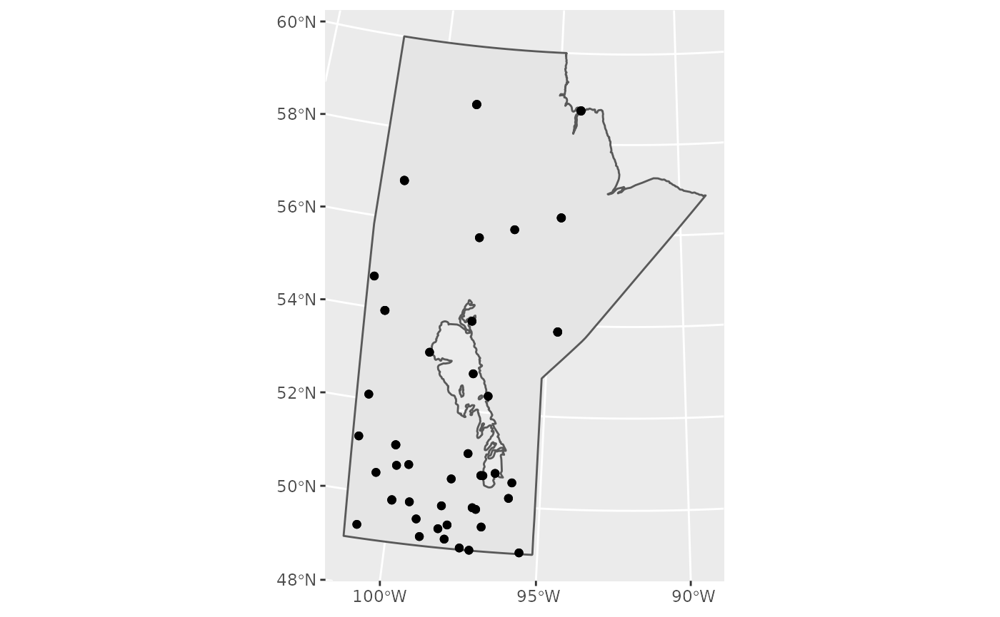
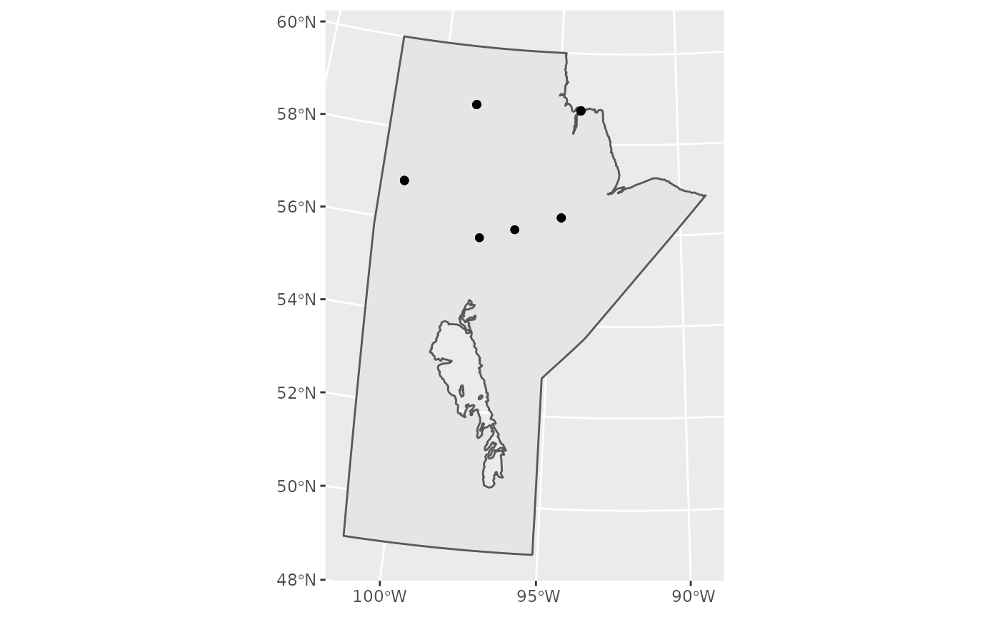
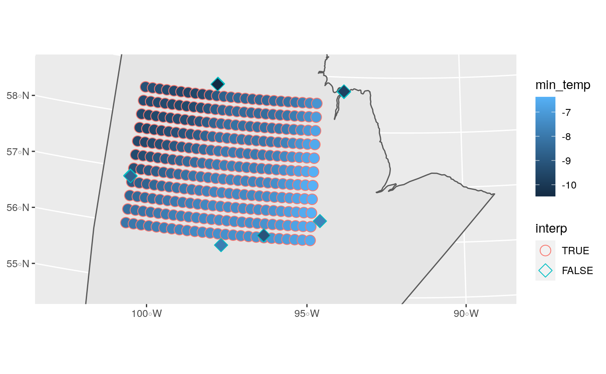

meteoland is a package for interpolating meteorological data over spatial scales. As of version v0.7.9 they support transforming and important weathercan output for use in spatial interpolations. In this article we will go over a hypothetical example.
First we’ll load the packages and find the stations we’re interested in and
## Loading required package: sp## weathercan v0.6.1
## The included data `stations` has been deprecated in favour of the function `stations()`.
## See ?stations for more details.##
## Attaching package: 'dplyr'## The following objects are masked from 'package:stats':
##
## filter, lag## The following objects are masked from 'package:base':
##
## intersect, setdiff, setequal, union## Linking to GEOS 3.8.0, GDAL 3.0.4, PROJ 6.3.1
library(ggplot2)
library(rnaturalearth)
s <- stations() %>%
filter(prov == "MB", interval != "month", start <= 2015, end >= 2015, !is.na(elev)) %>%
group_by(station_id) %>%
mutate(n = length(interval)) %>%
filter(n == 2)
s_map <- s %>%
st_as_sf(coords = c("lon", "lat"), crs = 4326) %>%
st_transform(3347)
mb <- ne_states(country = "Canada", returnclass = "sf") %>%
filter(name == "Manitoba") %>%
st_transform(3347)
ggplot() +
geom_sf(data = mb) +
geom_sf(data = s_map)
Let’s focus on northern Manitoba
s <- filter(s, lat > 55)
s_map <- s %>%
st_as_sf(coords = c("lon", "lat"), crs = 4326) %>%
st_transform(3347)
ggplot() +
geom_sf(data = mb) +
geom_sf(data = s_map)
mb_hr <- weather_dl(station_id = unique(s$station_id), interval = "hour",
start = "2015-01-01", end = "2015-12-31", verbose = TRUE)## Getting station: 10217## Formatting station data: 10217## Adding header data: 10217## Getting station: 29533## Formatting station data: 29533## Adding header data: 29533## Getting station: 30475## Formatting station data: 30475## Adding header data: 30475## Getting station: 44244## Formatting station data: 44244## Adding header data: 44244## Getting station: 48588## Formatting station data: 48588## Adding header data: 48588## Getting station: 48728## Formatting station data: 48728## Adding header data: 48728## Getting station: 48969## Formatting station data: 48969## Adding header data: 48969## Getting station: 48972## Formatting station data: 48972## Adding header data: 48972## Getting station: 52758## Formatting station data: 52758## Adding header data: 52758## Getting station: 53118## Formatting station data: 53118## Adding header data: 53118## Trimming missing values before and after## As of weathercan v0.3.0 time display is either local time or UTC
## See Details under ?weather_dl for more information.
## This message is shown once per session
mb_day <- weather_dl(station_id = unique(s$station_id), interval = "day",
start = "2015-01-01", end = "2015-12-31", verbose = TRUE)## Getting station: 10217## Formatting station data: 10217## No data for station 10217## Getting station: 29533## Formatting station data: 29533## Adding header data: 29533## Getting station: 30475## Formatting station data: 30475## Adding header data: 30475## Getting station: 44244## Formatting station data: 44244## Adding header data: 44244## Getting station: 48588## Formatting station data: 48588## Adding header data: 48588## Getting station: 48728## Formatting station data: 48728## Adding header data: 48728## Getting station: 48969## Formatting station data: 48969## Adding header data: 48969## Getting station: 48972## Formatting station data: 48972## Adding header data: 48972## Getting station: 52758## Formatting station data: 52758## Adding header data: 52758## Getting station: 53118## Formatting station data: 53118## Adding header data: 53118## Trimming missing values before and after## There are no data for some stations (10217), in this time range (2015-01-01 to 2015-12-31), for this interval (day)
## Available Station Data:
## # A tibble: 3 x 16
## prov station_name station_id climate_id WMO_id TC_id lat lon elev tz
## <chr> <chr> <dbl> <chr> <dbl> <chr> <dbl> <dbl> <dbl> <chr>
## 1 MB GILLAM 10217 5060999 NA WGX 56.4 -94.7 145. Etc/G…
## 2 MB GILLAM 10217 5060999 NA WGX 56.4 -94.7 145. Etc/G…
## 3 MB GILLAM 10217 5060999 NA WGX 56.4 -94.7 145. Etc/G…
## # … with 6 more variables: interval <chr>, start <dbl>, end <dbl>,
## # normals <lgl>, normals_1981_2010 <lgl>, normals_1971_2000 <lgl>## Some variables have non-numeric values (spd_max_gust), for stations: 53118, 52758, 48972, 48969, 48728, 48588, 44244, 30475, 29533## Replaced all non-numeric entries with NA. Use 'string_as = NULL' to keep as characters (see ?weather_dl).## Examples:## # A tibble: 180 x 6
## station_id date year month day spd_max_gust
## <dbl> <date> <chr> <chr> <chr> <chr>
## 1 53118 2015-01-03 2015 01 03 <31
## 2 53118 2015-01-04 2015 01 04 <31
## 3 53118 2015-01-14 2015 01 14 <31
## 4 53118 2015-01-15 2015 01 15 <31
## 5 53118 2015-01-16 2015 01 16 <31
## 6 53118 2015-01-18 2015 01 18 <31
## 7 53118 2015-01-19 2015 01 19 <31
## 8 53118 2015-01-20 2015 01 20 <31
## 9 53118 2015-01-21 2015 01 21 <31
## 10 53118 2015-01-24 2015 01 24 <31
## # … with 170 more rowsmeteoland
First we’ll reshape our hourly and daily data into a meteoland interpolations data object.
mb_north <- reshapeweathercan(mb_hr, mb_day, output = "MeteorologyInterpolationData")##
## Parsing hourly data...
##
|
| | 0%
|
|======= | 10%
|
|============== | 20%
|
|===================== | 30%
|
|============================ | 40%
|
|=================================== | 50%
|
|========================================== | 60%
|
|================================================= | 70%
|
|======================================================== | 80%
|
|=============================================================== | 90%
|
|======================================================================| 100%
## Parsing daily data...
##
|
| | 0%
|
|======== | 11%
|
|================ | 22%
|
|======================= | 33%
|
|=============================== | 44%
|
|======================================= | 56%
|
|=============================================== | 67%
|
|====================================================== | 78%
|
|============================================================== | 89%
|
|======================================================================| 100%We can get a sense of the data coverage (number of dates with data per station per variable).
interpolation.coverage(mb_north, type = 'spatial') %>%
head()## class : SpatialPointsDataFrame
## features : 6
## extent : -101.08, -94.07, 56.04, 58.73 (xmin, xmax, ymin, ymax)
## crs : +proj=longlat +datum=WGS84 +no_defs
## variables : 7
## names : MinTemperature, MaxTemperature, Precipitation, RelativeHumidity, Radiation, WindSpeed, WindDirection
## min values : 316, 316, 0, 316, 316, 316, 316
## max values : 365, 365, 361, 365, 365, 365, 365Or the number of stations with data per date per variable.
interpolation.coverage(mb_north, type = 'temporal') %>%
head()## MinTemperature MaxTemperature Precipitation RelativeHumidity
## 2015-01-01 10 10 9 10
## 2015-01-02 10 10 9 10
## 2015-01-03 10 10 9 10
## 2015-01-04 10 10 9 10
## 2015-01-05 10 10 9 10
## 2015-01-06 10 10 9 10
## Radiation WindSpeed WindDirection
## 2015-01-01 10 10 10
## 2015-01-02 10 10 10
## 2015-01-03 10 10 10
## 2015-01-04 10 10 10
## 2015-01-05 10 10 10
## 2015-01-06 10 10 10Next we have to calibrate the variable we’re interested in (here Tmin)
tmin <- interpolation.calibration(mb_north, variable = "Tmin",
N_seq = 20,
alpha_seq = seq(5, 10, by = 1),
verbose = TRUE)## Total number of stations: 10
## Number of stations with available data: 10
## Number of stations used for MAE: 10
## Number of parameter combinations to test: 6
##
## Evaluation of parameter combinations...
## N: 20 alpha: 5 MAE = 1.68305546444666
## N: 20 alpha: 6 MAE = 1.59149395853664
## N: 20 alpha: 7 MAE = 1.49341835012574
## N: 20 alpha: 8 MAE = 1.39492575055541
## N: 20 alpha: 9 MAE = 1.30158812421082
## N: 20 alpha: 10 MAE = 1.21666437558774
##
## Minimum MAE value: 1.21666437558774 N: 20 alpha: 10
mb_north@params$N_MinTemperature = tmin$N
mb_north@params$alpha_MinTemperature = tmin$alphaNext we cross-validate the data
cv <- interpolation.cv(mb_north, verbose = TRUE)## Station #1 10217
## Station #2 29533
## Station #3 30475
## Station #4 44244
## Station #5 48588
## Station #6 48728
## Station #7 48969
## Station #8 48972
## Station #9 52758
## Station #10 53118
summary(cv)## n r MAE sd.station.MAE
## MinTemperature 3526 0.99292438 1.2166644 0.5385937
## MaxTemperature 3526 0.98253144 2.1149947 0.6620170
## TemperatureRange 3526 0.83465985 2.0624639 0.5238625
## RelativeHumidity 3526 0.75120679 7.2127914 1.8532734
## Radiation 3526 0.93987563 1.8205223 0.4353054
## Station.rainfall 9 0.02942342 102.1275610 68.8160805
## Station.rainfall.relative 9 NA 31.1996569 24.7524851
## Station.precdays 9 -0.69629059 62.5555556 50.7003726
## Station.precdays.relative 9 NA 52.0082811 50.4409613
## Date.rainfall 335 0.94638371 2.0683397 NA
## Date.rainfall.relative 335 NA 19.2550930 NA
## Date.precstations 335 0.96329571 0.3014925 NA
## Date.precstations.relative 335 NA 9.4612651 NA
## sd.dates.MAE Bias sd.station.Bias
## MinTemperature 0.6429706 0.03885279 0.7881154
## MaxTemperature 1.3385053 0.08992694 1.9206376
## TemperatureRange 1.1274280 0.05107415 1.3340927
## RelativeHumidity 3.5138281 -0.61868195 3.4771370
## Radiation 1.5949752 -0.47304515 1.2475816
## Station.rainfall NA 28.07283860 124.8312929
## Station.rainfall.relative NA 12.56843031 39.1161133
## Station.precdays NA 1.22222222 83.4936791
## Station.precdays.relative NA 20.18027106 71.6178106
## Date.rainfall 6.0366196 0.78792701 NA
## Date.rainfall.relative 18.7907545 7.49436066 NA
## Date.precstations 0.4849509 0.07462687 NA
## Date.precstations.relative 16.5074315 1.43141436 NA
## sd.dates.Bias
## MinTemperature 0.1709199
## MaxTemperature 0.4124505
## TemperatureRange 0.4450292
## RelativeHumidity 1.4887304
## Radiation 1.1225100
## Station.rainfall NA
## Station.rainfall.relative NA
## Station.precdays NA
## Station.precdays.relative NA
## Date.rainfall 6.3331608
## Date.rainfall.relative 25.8578328
## Date.precstations 0.5663581
## Date.precstations.relative 18.9795617We create a dummy SpatialPointsTopography object representing the points (in this case) that we wish to interpolate over. Note that here I’m using a mean elevation as a placeholder as I don’t have actual elevation values. If you have slope and aspect, even better. Remember, interpolation is only as good as the data you give it!
interp <- expand.grid(lat = seq(56, 58.5, 0.25),
lon = seq(-101, -95, 0.25),
elev = mean(s_map$elev))
interp <- SpatialPointsTopography(as.matrix(interp[, c("lon", "lat")]),
elevation = interp$elev,
proj4string = CRS("+proj=longlat +ellps=WGS84"))## Warning in showSRID(uprojargs, format = "PROJ", multiline = "NO", prefer_proj
## = prefer_proj): Discarded datum Unknown based on WGS84 ellipsoid in Proj4
## definitionNow for the actual interpolation. Here we interpolate over all dates in the range of the original data.
new_interp <- interpolationpoints(mb_north, interp)## Warning in interpolationpoints(mb_north, interp): CRS projection of 'points'
## adapted to that of 'object'.## Processing point '1' (1/275) - done.
## Processing point '2' (2/275) - done.
## Processing point '3' (3/275) - done.
## Processing point '4' (4/275) - done.
## Processing point '5' (5/275) - done.
## Processing point '6' (6/275) - done.
## Processing point '7' (7/275) - done.
## Processing point '8' (8/275) - done.
## Processing point '9' (9/275) - done.
## Processing point '10' (10/275) - done.
## Processing point '11' (11/275) - done.
## Processing point '12' (12/275) - done.
## Processing point '13' (13/275) - done.
## Processing point '14' (14/275) - done.
## Processing point '15' (15/275) - done.
## Processing point '16' (16/275) - done.
## Processing point '17' (17/275) - done.
## Processing point '18' (18/275) - done.
## Processing point '19' (19/275) - done.
## Processing point '20' (20/275) - done.
## Processing point '21' (21/275) - done.
## Processing point '22' (22/275) - done.
## Processing point '23' (23/275) - done.
## Processing point '24' (24/275) - done.
## Processing point '25' (25/275) - done.
## Processing point '26' (26/275) - done.
## Processing point '27' (27/275) - done.
## Processing point '28' (28/275) - done.
## Processing point '29' (29/275) - done.
## Processing point '30' (30/275) - done.
## Processing point '31' (31/275) - done.
## Processing point '32' (32/275) - done.
## Processing point '33' (33/275) - done.
## Processing point '34' (34/275) - done.
## Processing point '35' (35/275) - done.
## Processing point '36' (36/275) - done.
## Processing point '37' (37/275) - done.
## Processing point '38' (38/275) - done.
## Processing point '39' (39/275) - done.
## Processing point '40' (40/275) - done.
## Processing point '41' (41/275) - done.
## Processing point '42' (42/275) - done.
## Processing point '43' (43/275) - done.
## Processing point '44' (44/275) - done.
## Processing point '45' (45/275) - done.
## Processing point '46' (46/275) - done.
## Processing point '47' (47/275) - done.
## Processing point '48' (48/275) - done.
## Processing point '49' (49/275) - done.
## Processing point '50' (50/275) - done.
## Processing point '51' (51/275) - done.
## Processing point '52' (52/275) - done.
## Processing point '53' (53/275) - done.
## Processing point '54' (54/275) - done.
## Processing point '55' (55/275) - done.
## Processing point '56' (56/275) - done.
## Processing point '57' (57/275) - done.
## Processing point '58' (58/275) - done.
## Processing point '59' (59/275) - done.
## Processing point '60' (60/275) - done.
## Processing point '61' (61/275) - done.
## Processing point '62' (62/275) - done.
## Processing point '63' (63/275) - done.
## Processing point '64' (64/275) - done.
## Processing point '65' (65/275) - done.
## Processing point '66' (66/275) - done.
## Processing point '67' (67/275) - done.
## Processing point '68' (68/275) - done.
## Processing point '69' (69/275) - done.
## Processing point '70' (70/275) - done.
## Processing point '71' (71/275) - done.
## Processing point '72' (72/275) - done.
## Processing point '73' (73/275) - done.
## Processing point '74' (74/275) - done.
## Processing point '75' (75/275) - done.
## Processing point '76' (76/275) - done.
## Processing point '77' (77/275) - done.
## Processing point '78' (78/275) - done.
## Processing point '79' (79/275) - done.
## Processing point '80' (80/275) - done.
## Processing point '81' (81/275) - done.
## Processing point '82' (82/275) - done.
## Processing point '83' (83/275) - done.
## Processing point '84' (84/275) - done.
## Processing point '85' (85/275) - done.
## Processing point '86' (86/275) - done.
## Processing point '87' (87/275) - done.
## Processing point '88' (88/275) - done.
## Processing point '89' (89/275) - done.
## Processing point '90' (90/275) - done.
## Processing point '91' (91/275) - done.
## Processing point '92' (92/275) - done.
## Processing point '93' (93/275) - done.
## Processing point '94' (94/275) - done.
## Processing point '95' (95/275) - done.
## Processing point '96' (96/275) - done.
## Processing point '97' (97/275) - done.
## Processing point '98' (98/275) - done.
## Processing point '99' (99/275) - done.
## Processing point '100' (100/275) - done.
## Processing point '101' (101/275) - done.
## Processing point '102' (102/275) - done.
## Processing point '103' (103/275) - done.
## Processing point '104' (104/275) - done.
## Processing point '105' (105/275) - done.
## Processing point '106' (106/275) - done.
## Processing point '107' (107/275) - done.
## Processing point '108' (108/275) - done.
## Processing point '109' (109/275) - done.
## Processing point '110' (110/275) - done.
## Processing point '111' (111/275) - done.
## Processing point '112' (112/275) - done.
## Processing point '113' (113/275) - done.
## Processing point '114' (114/275) - done.
## Processing point '115' (115/275) - done.
## Processing point '116' (116/275) - done.
## Processing point '117' (117/275) - done.
## Processing point '118' (118/275) - done.
## Processing point '119' (119/275) - done.
## Processing point '120' (120/275) - done.
## Processing point '121' (121/275) - done.
## Processing point '122' (122/275) - done.
## Processing point '123' (123/275) - done.
## Processing point '124' (124/275) - done.
## Processing point '125' (125/275) - done.
## Processing point '126' (126/275) - done.
## Processing point '127' (127/275) - done.
## Processing point '128' (128/275) - done.
## Processing point '129' (129/275) - done.
## Processing point '130' (130/275) - done.
## Processing point '131' (131/275) - done.
## Processing point '132' (132/275) - done.
## Processing point '133' (133/275) - done.
## Processing point '134' (134/275) - done.
## Processing point '135' (135/275) - done.
## Processing point '136' (136/275) - done.
## Processing point '137' (137/275) - done.
## Processing point '138' (138/275) - done.
## Processing point '139' (139/275) - done.
## Processing point '140' (140/275) - done.
## Processing point '141' (141/275) - done.
## Processing point '142' (142/275) - done.
## Processing point '143' (143/275) - done.
## Processing point '144' (144/275) - done.
## Processing point '145' (145/275) - done.
## Processing point '146' (146/275) - done.
## Processing point '147' (147/275) - done.
## Processing point '148' (148/275) - done.
## Processing point '149' (149/275) - done.
## Processing point '150' (150/275) - done.
## Processing point '151' (151/275) - done.
## Processing point '152' (152/275) - done.
## Processing point '153' (153/275) - done.
## Processing point '154' (154/275) - done.
## Processing point '155' (155/275) - done.
## Processing point '156' (156/275) - done.
## Processing point '157' (157/275) - done.
## Processing point '158' (158/275) - done.
## Processing point '159' (159/275) - done.
## Processing point '160' (160/275) - done.
## Processing point '161' (161/275) - done.
## Processing point '162' (162/275) - done.
## Processing point '163' (163/275) - done.
## Processing point '164' (164/275) - done.
## Processing point '165' (165/275) - done.
## Processing point '166' (166/275) - done.
## Processing point '167' (167/275) - done.
## Processing point '168' (168/275) - done.
## Processing point '169' (169/275) - done.
## Processing point '170' (170/275) - done.
## Processing point '171' (171/275) - done.
## Processing point '172' (172/275) - done.
## Processing point '173' (173/275) - done.
## Processing point '174' (174/275) - done.
## Processing point '175' (175/275) - done.
## Processing point '176' (176/275) - done.
## Processing point '177' (177/275) - done.
## Processing point '178' (178/275) - done.
## Processing point '179' (179/275) - done.
## Processing point '180' (180/275) - done.
## Processing point '181' (181/275) - done.
## Processing point '182' (182/275) - done.
## Processing point '183' (183/275) - done.
## Processing point '184' (184/275) - done.
## Processing point '185' (185/275) - done.
## Processing point '186' (186/275) - done.
## Processing point '187' (187/275) - done.
## Processing point '188' (188/275) - done.
## Processing point '189' (189/275) - done.
## Processing point '190' (190/275) - done.
## Processing point '191' (191/275) - done.
## Processing point '192' (192/275) - done.
## Processing point '193' (193/275) - done.
## Processing point '194' (194/275) - done.
## Processing point '195' (195/275) - done.
## Processing point '196' (196/275) - done.
## Processing point '197' (197/275) - done.
## Processing point '198' (198/275) - done.
## Processing point '199' (199/275) - done.
## Processing point '200' (200/275) - done.
## Processing point '201' (201/275) - done.
## Processing point '202' (202/275) - done.
## Processing point '203' (203/275) - done.
## Processing point '204' (204/275) - done.
## Processing point '205' (205/275) - done.
## Processing point '206' (206/275) - done.
## Processing point '207' (207/275) - done.
## Processing point '208' (208/275) - done.
## Processing point '209' (209/275) - done.
## Processing point '210' (210/275) - done.
## Processing point '211' (211/275) - done.
## Processing point '212' (212/275) - done.
## Processing point '213' (213/275) - done.
## Processing point '214' (214/275) - done.
## Processing point '215' (215/275) - done.
## Processing point '216' (216/275) - done.
## Processing point '217' (217/275) - done.
## Processing point '218' (218/275) - done.
## Processing point '219' (219/275) - done.
## Processing point '220' (220/275) - done.
## Processing point '221' (221/275) - done.
## Processing point '222' (222/275) - done.
## Processing point '223' (223/275) - done.
## Processing point '224' (224/275) - done.
## Processing point '225' (225/275) - done.
## Processing point '226' (226/275) - done.
## Processing point '227' (227/275) - done.
## Processing point '228' (228/275) - done.
## Processing point '229' (229/275) - done.
## Processing point '230' (230/275) - done.
## Processing point '231' (231/275) - done.
## Processing point '232' (232/275) - done.
## Processing point '233' (233/275) - done.
## Processing point '234' (234/275) - done.
## Processing point '235' (235/275) - done.
## Processing point '236' (236/275) - done.
## Processing point '237' (237/275) - done.
## Processing point '238' (238/275) - done.
## Processing point '239' (239/275) - done.
## Processing point '240' (240/275) - done.
## Processing point '241' (241/275) - done.
## Processing point '242' (242/275) - done.
## Processing point '243' (243/275) - done.
## Processing point '244' (244/275) - done.
## Processing point '245' (245/275) - done.
## Processing point '246' (246/275) - done.
## Processing point '247' (247/275) - done.
## Processing point '248' (248/275) - done.
## Processing point '249' (249/275) - done.
## Processing point '250' (250/275) - done.
## Processing point '251' (251/275) - done.
## Processing point '252' (252/275) - done.
## Processing point '253' (253/275) - done.
## Processing point '254' (254/275) - done.
## Processing point '255' (255/275) - done.
## Processing point '256' (256/275) - done.
## Processing point '257' (257/275) - done.
## Processing point '258' (258/275) - done.
## Processing point '259' (259/275) - done.
## Processing point '260' (260/275) - done.
## Processing point '261' (261/275) - done.
## Processing point '262' (262/275) - done.
## Processing point '263' (263/275) - done.
## Processing point '264' (264/275) - done.
## Processing point '265' (265/275) - done.
## Processing point '266' (266/275) - done.
## Processing point '267' (267/275) - done.
## Processing point '268' (268/275) - done.
## Processing point '269' (269/275) - done.
## Processing point '270' (270/275) - done.
## Processing point '271' (271/275) - done.
## Processing point '272' (272/275) - done.
## Processing point '273' (273/275) - done.
## Processing point '274' (274/275) - done.
## Processing point '275' (275/275) - done.We can summarize and plot our interpolations
map <- summarypoints(new_interp, var = "MinTemperature")## Summarizing MinTemperature in 275 points...
##
|
| | 0%
|
|= | 1%
|
|= | 2%
|
|== | 2%
|
|== | 3%
|
|=== | 4%
|
|=== | 5%
|
|==== | 5%
|
|==== | 6%
|
|===== | 7%
|
|===== | 8%
|
|====== | 8%
|
|====== | 9%
|
|======= | 9%
|
|======= | 10%
|
|======= | 11%
|
|======== | 11%
|
|======== | 12%
|
|========= | 12%
|
|========= | 13%
|
|========== | 14%
|
|========== | 15%
|
|=========== | 15%
|
|=========== | 16%
|
|============ | 17%
|
|============ | 18%
|
|============= | 18%
|
|============= | 19%
|
|============== | 20%
|
|=============== | 21%
|
|=============== | 22%
|
|================ | 22%
|
|================ | 23%
|
|================= | 24%
|
|================= | 25%
|
|================== | 25%
|
|================== | 26%
|
|=================== | 27%
|
|=================== | 28%
|
|==================== | 28%
|
|==================== | 29%
|
|===================== | 29%
|
|===================== | 30%
|
|===================== | 31%
|
|====================== | 31%
|
|====================== | 32%
|
|======================= | 32%
|
|======================= | 33%
|
|======================== | 34%
|
|======================== | 35%
|
|========================= | 35%
|
|========================= | 36%
|
|========================== | 37%
|
|========================== | 38%
|
|=========================== | 38%
|
|=========================== | 39%
|
|============================ | 40%
|
|============================= | 41%
|
|============================= | 42%
|
|============================== | 42%
|
|============================== | 43%
|
|=============================== | 44%
|
|=============================== | 45%
|
|================================ | 45%
|
|================================ | 46%
|
|================================= | 47%
|
|================================= | 48%
|
|================================== | 48%
|
|================================== | 49%
|
|=================================== | 49%
|
|=================================== | 50%
|
|=================================== | 51%
|
|==================================== | 51%
|
|==================================== | 52%
|
|===================================== | 52%
|
|===================================== | 53%
|
|====================================== | 54%
|
|====================================== | 55%
|
|======================================= | 55%
|
|======================================= | 56%
|
|======================================== | 57%
|
|======================================== | 58%
|
|========================================= | 58%
|
|========================================= | 59%
|
|========================================== | 60%
|
|=========================================== | 61%
|
|=========================================== | 62%
|
|============================================ | 62%
|
|============================================ | 63%
|
|============================================= | 64%
|
|============================================= | 65%
|
|============================================== | 65%
|
|============================================== | 66%
|
|=============================================== | 67%
|
|=============================================== | 68%
|
|================================================ | 68%
|
|================================================ | 69%
|
|================================================= | 69%
|
|================================================= | 70%
|
|================================================= | 71%
|
|================================================== | 71%
|
|================================================== | 72%
|
|=================================================== | 72%
|
|=================================================== | 73%
|
|==================================================== | 74%
|
|==================================================== | 75%
|
|===================================================== | 75%
|
|===================================================== | 76%
|
|====================================================== | 77%
|
|====================================================== | 78%
|
|======================================================= | 78%
|
|======================================================= | 79%
|
|======================================================== | 80%
|
|========================================================= | 81%
|
|========================================================= | 82%
|
|========================================================== | 82%
|
|========================================================== | 83%
|
|=========================================================== | 84%
|
|=========================================================== | 85%
|
|============================================================ | 85%
|
|============================================================ | 86%
|
|============================================================= | 87%
|
|============================================================= | 88%
|
|============================================================== | 88%
|
|============================================================== | 89%
|
|=============================================================== | 89%
|
|=============================================================== | 90%
|
|=============================================================== | 91%
|
|================================================================ | 91%
|
|================================================================ | 92%
|
|================================================================= | 92%
|
|================================================================= | 93%
|
|================================================================== | 94%
|
|================================================================== | 95%
|
|=================================================================== | 95%
|
|=================================================================== | 96%
|
|==================================================================== | 97%
|
|==================================================================== | 98%
|
|===================================================================== | 98%
|
|===================================================================== | 99%
|
|======================================================================| 100%
## Arranging output...
##
|
| | 0%
|
|= | 1%
|
|= | 2%
|
|== | 2%
|
|== | 3%
|
|=== | 4%
|
|=== | 5%
|
|==== | 5%
|
|==== | 6%
|
|===== | 7%
|
|===== | 8%
|
|====== | 8%
|
|====== | 9%
|
|======= | 9%
|
|======= | 10%
|
|======= | 11%
|
|======== | 11%
|
|======== | 12%
|
|========= | 12%
|
|========= | 13%
|
|========== | 14%
|
|========== | 15%
|
|=========== | 15%
|
|=========== | 16%
|
|============ | 17%
|
|============ | 18%
|
|============= | 18%
|
|============= | 19%
|
|============== | 20%
|
|=============== | 21%
|
|=============== | 22%
|
|================ | 22%
|
|================ | 23%
|
|================= | 24%
|
|================= | 25%
|
|================== | 25%
|
|================== | 26%
|
|=================== | 27%
|
|=================== | 28%
|
|==================== | 28%
|
|==================== | 29%
|
|===================== | 29%
|
|===================== | 30%
|
|===================== | 31%
|
|====================== | 31%
|
|====================== | 32%
|
|======================= | 32%
|
|======================= | 33%
|
|======================== | 34%
|
|======================== | 35%
|
|========================= | 35%
|
|========================= | 36%
|
|========================== | 37%
|
|========================== | 38%
|
|=========================== | 38%
|
|=========================== | 39%
|
|============================ | 40%
|
|============================= | 41%
|
|============================= | 42%
|
|============================== | 42%
|
|============================== | 43%
|
|=============================== | 44%
|
|=============================== | 45%
|
|================================ | 45%
|
|================================ | 46%
|
|================================= | 47%
|
|================================= | 48%
|
|================================== | 48%
|
|================================== | 49%
|
|=================================== | 49%
|
|=================================== | 50%
|
|=================================== | 51%
|
|==================================== | 51%
|
|==================================== | 52%
|
|===================================== | 52%
|
|===================================== | 53%
|
|====================================== | 54%
|
|====================================== | 55%
|
|======================================= | 55%
|
|======================================= | 56%
|
|======================================== | 57%
|
|======================================== | 58%
|
|========================================= | 58%
|
|========================================= | 59%
|
|========================================== | 60%
|
|=========================================== | 61%
|
|=========================================== | 62%
|
|============================================ | 62%
|
|============================================ | 63%
|
|============================================= | 64%
|
|============================================= | 65%
|
|============================================== | 65%
|
|============================================== | 66%
|
|=============================================== | 67%
|
|=============================================== | 68%
|
|================================================ | 68%
|
|================================================ | 69%
|
|================================================= | 69%
|
|================================================= | 70%
|
|================================================= | 71%
|
|================================================== | 71%
|
|================================================== | 72%
|
|=================================================== | 72%
|
|=================================================== | 73%
|
|==================================================== | 74%
|
|==================================================== | 75%
|
|===================================================== | 75%
|
|===================================================== | 76%
|
|====================================================== | 77%
|
|====================================================== | 78%
|
|======================================================= | 78%
|
|======================================================= | 79%
|
|======================================================== | 80%
|
|========================================================= | 81%
|
|========================================================= | 82%
|
|========================================================== | 82%
|
|========================================================== | 83%
|
|=========================================================== | 84%
|
|=========================================================== | 85%
|
|============================================================ | 85%
|
|============================================================ | 86%
|
|============================================================= | 87%
|
|============================================================= | 88%
|
|============================================================== | 88%
|
|============================================================== | 89%
|
|=============================================================== | 89%
|
|=============================================================== | 90%
|
|=============================================================== | 91%
|
|================================================================ | 91%
|
|================================================================ | 92%
|
|================================================================= | 92%
|
|================================================================= | 93%
|
|================================================================== | 94%
|
|================================================================== | 95%
|
|=================================================================== | 95%
|
|=================================================================== | 96%
|
|==================================================================== | 97%
|
|==================================================================== | 98%
|
|===================================================================== | 98%
|
|===================================================================== | 99%
|
|======================================================================| 100%
mb_interp <- st_as_sf(map) %>%
rename_at(.vars = vars(contains("matrix")), ~"min_temp") %>%
mutate(station_id = NA, interp = TRUE)
mb_stations <- mb_day %>%
group_by(station_id, lat, lon) %>%
summarize(min_temp = mean(min_temp, na.rm = TRUE)) %>%
st_as_sf(coords = c("lon", "lat"), crs = st_crs(mb_interp)) %>%
mutate(interp = FALSE)## `summarise()` has grouped output by 'station_id', 'lat'. You can override using the `.groups` argument.
map_sf <- rbind(mb_interp, mb_stations) %>%
mutate(interp = factor(interp, levels = c("TRUE", "FALSE")))
ggplot() +
geom_sf(data = mb) +
geom_sf(data = map_sf, aes(fill = min_temp, shape = interp, colour = interp), size = 4) +
scale_shape_manual(values = c(21,23)) +
coord_sf(ylim = c(2100000, 2550000))